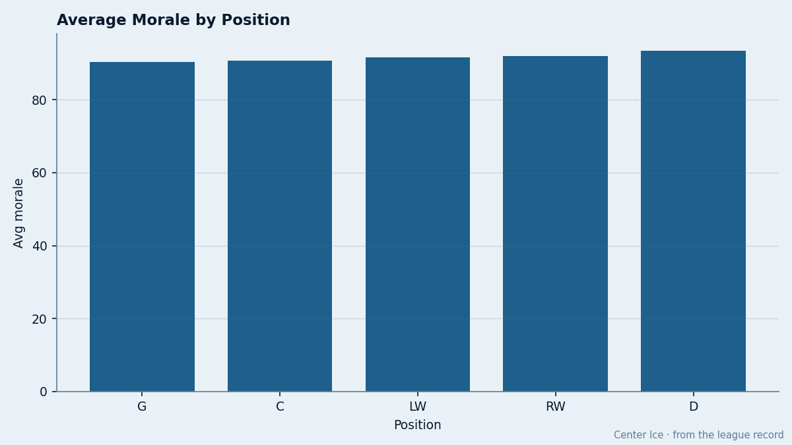
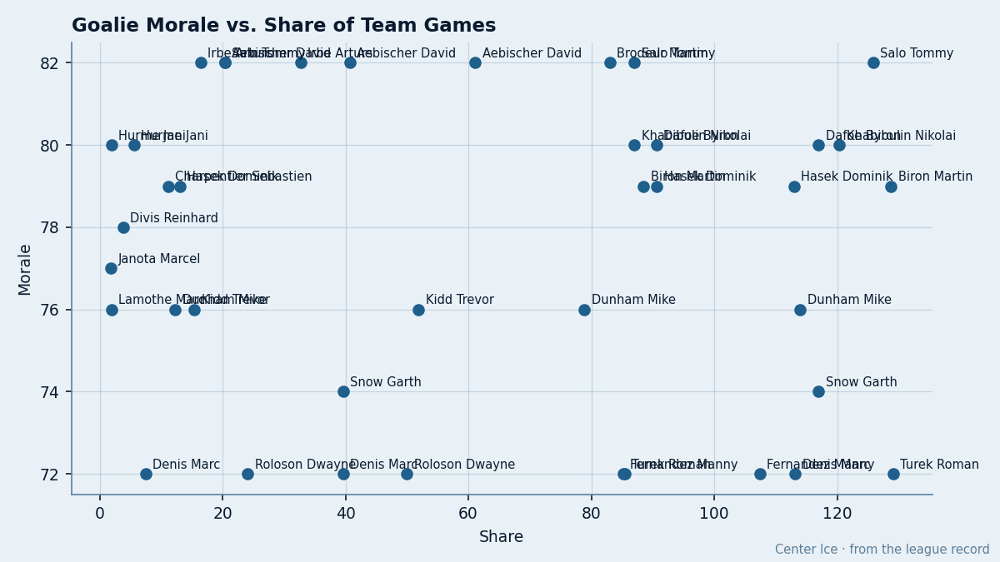

4.1 Times: Goaltenders Fill 47% of the Morale Basement From 11% of the Roster
The Bureau's Morale Scale puts 7 goaltenders in its bottom 15. Five of them are backups who sit.
 Doug ReimerAnalytics editor, ex-video coach · The Slot Report
Doug ReimerAnalytics editor, ex-video coach · The Slot Report
Goaltenders are 11.4% of the active roster pool (108 of 950 players) and 46.7% of the Morale Scale's bottom 15. That is a 4.1 times over-representation, computed by dividing the goalie share of the bottom 15 by the goalie share of the league. No other position clears 1 of 15.

The positional averages confirm the imbalance. The Bureau's Morale Scale gives goaltenders a league-wide mean of 90.3. Centers sit at 90.7, left wings at 91.7, right wings at 92.0. Defensemen top the table at 93.5, a gap of 3.2 points from the goalies. That makes goaltending the lowest-graded position on the instrument.
Five of seven are backups
The 7 goaltenders in the bottom 15 span the full workload spectrum: 13 games for  Dwayne Roloson84, 46 for
Dwayne Roloson84, 46 for  Manny Fernandez90, 47 for
Manny Fernandez90, 47 for  Roman Turek86, 21 for
Roman Turek86, 21 for  Marc Denis88, 21 for
Marc Denis88, 21 for  Garth Snow80, 8 for
Garth Snow80, 8 for  Trevor Kidd83, and no games on the workload table for Marc Lamothe67. Fernandez and Turek are their clubs' clear starters at 85% and 85% share respectively. The other 5 are backups or third-stringers.
Trevor Kidd83, and no games on the workload table for Marc Lamothe67. Fernandez and Turek are their clubs' clear starters at 85% and 85% share respectively. The other 5 are backups or third-stringers.
| player | club | morale | gp | share | club avg morale | club pts |
|---|---|---|---|---|---|---|
| Manny Fernandez |  Minnesota Wild Minnesota Wild | 72 | 46 | 85% | 87.8 | 47 |
| Dwayne Roloson | Minnesota Wild | 72 | 13 | 24% | 87.8 | 47 |
| Roman Turek |  Calgary Flames Calgary Flames | 72 | 47 | 85% | 87.3 | 44 |
| Marc Denis |  Columbus Blue Jackets Columbus Blue Jackets | 72 | 21 | 40% | 85.5 | 55 |
| Garth Snow |  New York Islanders New York Islanders | 74 | 21 | 40% | 87.6 | 55 |
| Trevor Kidd |  Colorado Avalanche Colorado Avalanche | 76 | 8 | 15% | 94.9 | 67 |
| Marc Lamothe |  Los Angeles Kings Los Angeles Kings | 76 | 0 | 0% | 94.9 | 54 |
Fernandez and Roloson share the same room. Minnesota Wild carries the league's 5th-lowest club average at 87.8, and 2 of the 7 goalie entries. Calgary Flames sits at 87.3 with Turek anchored to the bottom line. Columbus Blue Jackets is the worst room in hockey at 85.5, and Denis at 72 is one of 3 Columbus players in the league's bottom 15.

The starter's mood tracks the room
A correlation of 0.484 links the starting goaltender's morale grade to his club's room-wide average. That is not 1.0, and it does not establish direction. A bad room can sour a netminder; a sulking starter can drag a room. The instrument cannot separate them.
What it does say is that where the goalie is miserable, the club tends to be. Columbus Blue Jackets at 85.5 has its backup at 72. Minnesota Wild at 87.8 has both its starters below the league mean. Calgary Flames at 87.3 has its starter at 72 and on the wrong side of a 3-year deal at $4.40M.
Turek carries the most money of the group at $4.40M, 3 years remaining, 47 starts, and a morale grade of 72. Calgary Flames is 44 points in 55 games and 11 below the 8th-place line in the West. The salary and the record explain each other poorly; the morale grade says the man knows where his club sits.
Denis at Columbus Blue Jackets earns $1.00M, has 0 years left, and has played 21 of 53 games (40%). He is in a contract year on a club with the league's worst room. The Bureau's numbers do not say whether he is shopping himself or whether the room dragged him down.
What the happy goalies look like
For contrast, the top of the goaltending morale column:  Olaf Kolzig92 at 96 on 95% share, 53 games, and a $6.20M contract with 3 years left.
Olaf Kolzig92 at 96 on 95% share, 53 games, and a $6.20M contract with 3 years left.  Washington Capitals averages 94.8 as a room.
Washington Capitals averages 94.8 as a room.  Kevin Weekes88 at 95 on 82% share with
Kevin Weekes88 at 95 on 82% share with  Carolina Hurricanes, a club averaging 93.0.
Carolina Hurricanes, a club averaging 93.0.  Marty Turco93 at 92 on 81% share at
Marty Turco93 at 92 on 81% share at  Dallas Stars, earning $0.60M in a contract year.
Dallas Stars, earning $0.60M in a contract year.
The pattern is not workload. Kolzig plays 95% of his club's games and sits at 96; Fernandez plays 85% and sits at 72. The volume is similar; the standing of the club is not. WSH at 69 points is in a playoff line, MIN at 47 is 8 below the West's 8th.
The method
I pulled every player carrying position G from the current roster file, joined the Morale Scale grade, and computed the share in the bottom 15 against the share in the league. The over-representation ratio of 4.1 comes from dividing 46.7% (7 of 15) by 11.4% (108 of 950). The positional means come from averaging the morale grade across every listed player at that position. The correlation of 0.484 pairs each club's starting goaltender (the man with the highest share) against the published club average.
The finding stops short of broken netminders. It says the position absorbs a disproportionate share of institutional misery, and that the ones who absorb it most often are the ones who don't play. Los Angeles Kings carries Marc Lamothe at 76 on 0 games and 4 years left at $1.08M. He is the only player in the bottom 15 who has not taken an ice this season. The Morale Scale gave him 76 anyway.